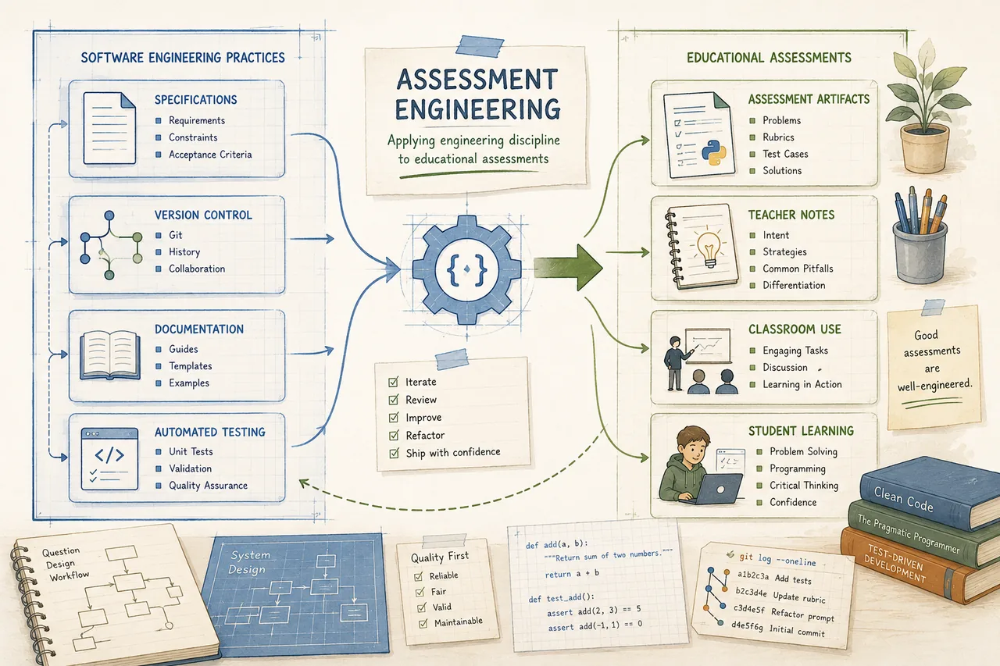

Teachers work alone
Many recreate resources that someone else has already solved, year after year.
PyPractical began with a simple conversation between a teacher and an AI — and grew into a shared answer to a problem every programming teacher faces.

The original goal was modest: create a better programming practical for a Grade 9 Python class. The first problem evolved through many revisions — improving the story, simplifying the instructions, refining the unit tests, verifying every expected answer.
Eventually came the realization:
“We were no longer designing a single assessment. We were designing a better way to create assessments.”
Teachers invest countless hours writing problems, preparing starter code, building test cases, and grading — often alone.
Many recreate resources that someone else has already solved, year after year.
Students too often face assessments that measure recall instead of real programming ability.
Manual grading is slow and inconsistent — time taken from mentoring, encouraging, and inspiring.
We imagine a future where every programming teacher has access to a collection of practical assessments that are:
Teachers should spend their creativity designing learning experiences — not repeatedly rebuilding assessment infrastructure.
Programming is difficult enough without unnecessary frustration. PyPractical is built around a simple belief: students who experience regular success become students who continue programming.
Every assessment should leave students thinking: “I can do this.”
“Students who experience regular success become students who continue programming.” — Project Vision
Education grows stronger when teachers share. Every classroom teaches something — every contribution makes the project better.